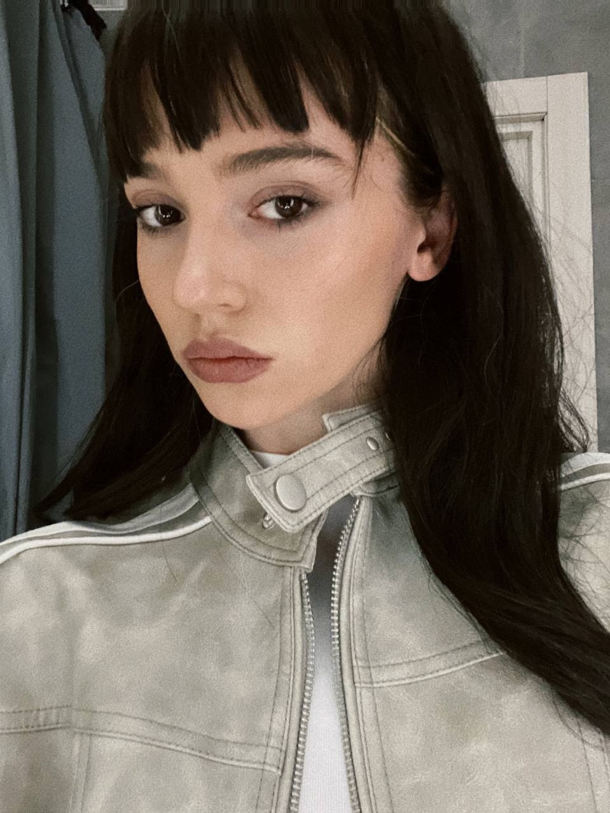
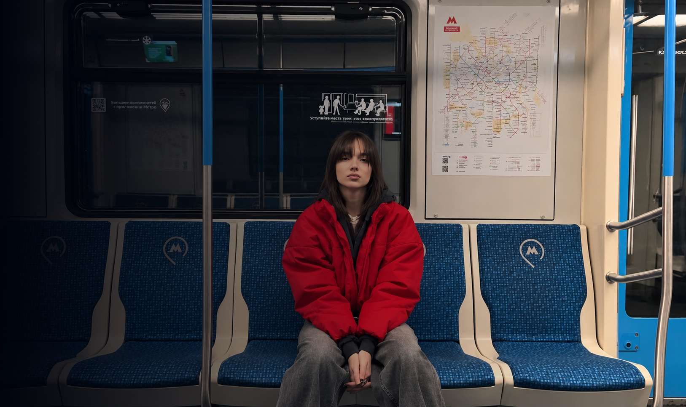
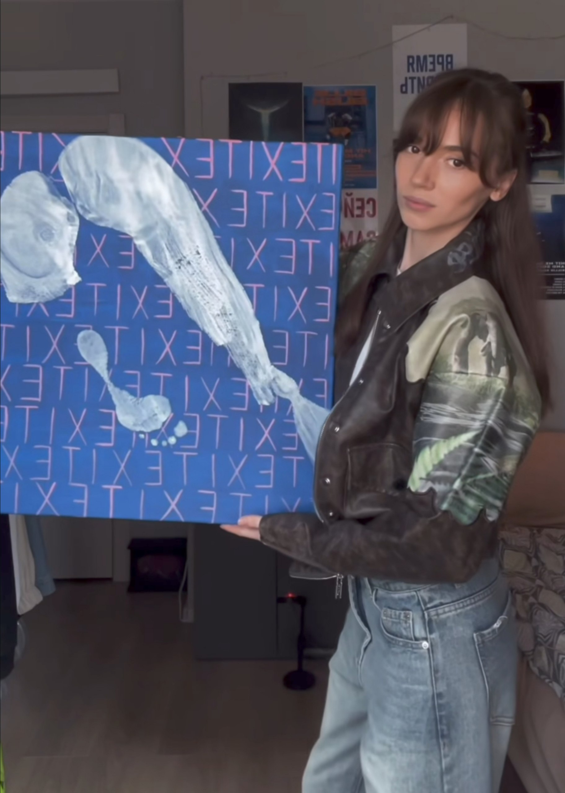

учусь отпускать
иногда что-то уходит раньше, чем мы готовы отпустить.
добро пожаловать в мой мир
“Я хочу просто продолжать разлагаться
марально в этом бесконечном потоке прикольных рилсов.”
Хэлоу! Я Даша, мне 29 и я переехала на эту страницу, где начала всё с нуля, буду рада твоему присутствию здесь!
anti ♡

иногда что-то уходит раньше, чем мы готовы отпустить.
возможно, у тишины тоже есть свой язык.
не идеальной. просто немного больше собой.

Мне кажется, жизнь не столько о том, чтобы точно знать, куда ты идёшь, сколько о том, чтобы замечать, кем ты становишься по дороге.
Есть главы, к которым я никогда не захочу вернуться, и моменты, которые хочется сохранить навсегда. Эта страница — о них обо всех: красивых, сложных и настоящих.


